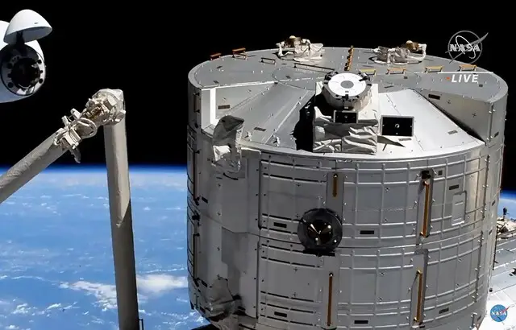

Crew Dragon : SpaceX cesse la production de ses capsules spatiales habitées

SpaceX a décidé d’arrêter la production de nouvelles capsules habitées Crew Dragon. L’entreprise spatiale veut se concentrer sur d’autres objectifs. Il n’y aura donc que quatre capsules habitées Crew Dragon : Détermination, Résilience, Endurance et Liberté, la dernière étant toujours en cours de construction. En renonçant à ce programme, SpaceX fait le choix d’avancer sur d’autres projets, comme celui de la fusée Starship, maillon essentiel de la conquête spatiale pour l’entreprise.
Starship doit en effet succéder à Falcon 9 mais le futur engin est loin d’être terminé. Son premier lancement a été retardé de plusieurs mois en raison d’obstacles au développement du moteur Raptor. SpaceX doit également se concentrer sur son projet de fusée pour aller sur la Lune et sur Mars.SpaceX n’exclut cependant pas de produire de nouvelles capsules Crew Dragon à l’avenir si cela s’avère nécessaire. Mais le projet se limitera pour le moment à la remise en l’état de la flotte actuelle. Le modèle économique de l’entreprise d’Elon Musk repose en effet sur la réutilisation des engins.
Une capsule Crew Dragon est conçue pour cinq voyages. Au total ce sont donc 20 allers-retours entre la Terre et la Station spatiale internationale que le programme offre. Cinq trajets (dont quatre vers l’ISS) ont déjà été organisés depuis 2020, rappelle Reuters. Ces capsules sont devenues les navettes de prédilection pour les vols spatiaux habités.
29/03/22 à 16h55